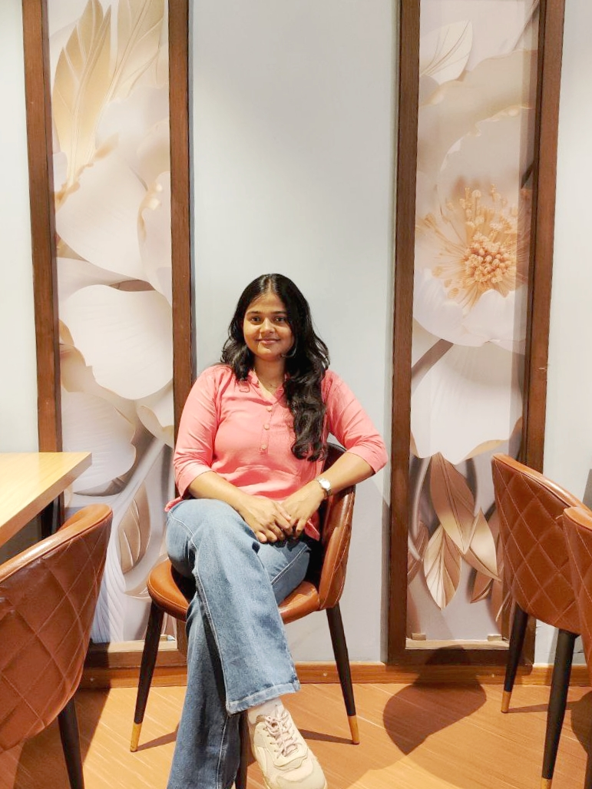

Arpita Mishra · Portfolio
Available Open to opportunities · Class of 2026
Computer Science Engineer & Aspiring Software Developer — passionate about data, systems, and building things that matter.
Cuttack, Odisha, India

AMAbout me
Final-year B.Tech student in Computer Science Engineering (AIML) at C.V. Raman Global University, graduating in 2026 with a CGPA of 8.57.
I have a strong foundation in programming, data analytics, and machine learning — built through real projects and hands-on exploration. A quick learner who thrives in collaborative teams, eager to build applications that are efficient, reliable, and scalable.
Projects
NLP · Deep Learning · Deployment
Fine-tuned DistilBERT for sentiment analysis achieving 90% accuracy. Deployed as a live interactive web app via Streamlit.
↻ Flip for details
Computer Vision · PyTorch · CNN
End-to-end image classification pipeline using a custom CNN on CIFAR-10, achieving ~71% test accuracy with full unit testing.
↻ Flip for details
CNN Image Classification — CIFAR-10
→ Custom CNN with data augmentation on CIFAR-10
→ Training loop with loss tracking & checkpointing
→ Single-image inference script included
→ Unit tested with pytest · ~71% test accuracy
Generative AI · NLP · Prototyping
A GenAI Jupyter Notebook project exploring generative AI models, data preprocessing, and AI/ML prototyping in an experiment-friendly structure.
↻ Flip for details
AIVA — AI Virtual Assistant
→ GenAI model prototyping & experimentation
→ Data preprocessing & analysis workflows
→ Notebook-based modular, extendable structure
→ Customizable for custom GenAI projects
Machine Learning · Logistics
Built a predictive model to analyze shipment delays using real-world logistics data.
↻ Flip for details
ShipmentSure — Predicting On-Time Delivery
→ Data preprocessing & feature engineering
→ Exploratory data analysis on logistics data
→ Classification techniques for delivery prediction
→ Improved reliability of on-time delivery estimates
Computer Vision · Classification
Developed a fruit classification system based on color features.
↻ Flip for details
Fruit Detection and Color Analysis
→ Color-feature based classification system
→ Model evaluation using accuracy metrics
→ F1-score analysis for performance tuning
→ Reliable & consistent classification results
Enterprise · Document Management
Contributed to digitizing and organizing enterprise agreements.
↻ Flip for details
Efficient Agreement Management
→ Digitized & organized enterprise agreements
→ Version tracking implementation
→ Alert-based document management
→ Streamlined enterprise workflows
Technical skills
Programming
Data & Analytics
Machine Learning
Core CS
Achievements
Education
B.Tech — Computer Science Engineering (AIML)
C.V. Raman Global University, Bhubaneswar
CGPA: 8.57
Science
Jatiya Kabi Bira Kishor Das (JKBK) Government College, Cuttack
Secondary Education
Saraswati Sishu Vidya Mandir, Nayabazar, Cuttack
Certifications
Google Data Analytics Professional Certificate
Coursera
Data Science & Analytics
HP LIFE
Foundation Google UX Design Specialization
Coursera
EF SET English Certificate — C2 Proficient
EF Standard English Test
Infosys Springboard Virtual Internship 6.0 (B3)
Infosys
Open to internships, junior roles, and collaborative projects in software development and data science. Always happy to connect!